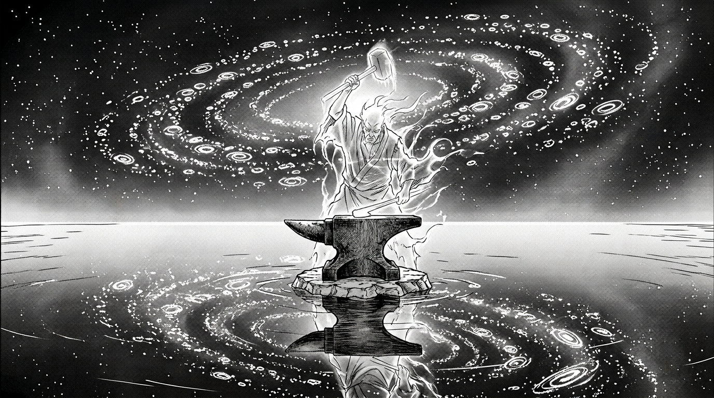

Место между мирами

У магов, переживших клиническую смерть, спрашивают одно и то же: «Что вы видели?» Большинство описывают темноту. Некоторые — свет. Единицы — тех, кто когда-то носил кольца достаточно долго, чтобы мана пропитала не только тело, но и душу, — рассказывают кое-что другое.
Они рассказывают о воде. Бесконечной, идеально гладкой глади, по которой можно ходить. Она не мокрая. Она не холодная. Она — зеркало, и в этом зеркале отражается не ваше лицо, а всё, что вы когда-либо сделали.
Над головой — не небо. Космос. Бездонный, тёмный, тихий. Но вместо звёзд в нём висят миллиарды крошечных светящихся точек, и если присмотреться — каждая из них имеет форму кольца. Разных цветов: алые, синие, серебристые, золотые, фиолетовые. Они кружатся медленно, как планеты по орбитам, и гудят на частотах, которые слышит не ухо, а что-то внутри — то, чему нет названия.
Это место называют Пограничьем. Оно не принадлежит ни одной фракции, ни одной стихии. Оно — между. Между жизнью и смертью. Между маной и пустотой. Между тем, что есть, и тем, что могло бы быть.
Те немногие, кто побывал там и вернулся, описывают ещё одну деталь. В центре бесконечной зеркальной глади стоит предмет, который не должен существовать в измерении чистой энергии: старая, грубая, настоящая наковальня. Она покрыта выбоинами и ожогами. Она пахнет железом и потом. Она — единственное реальное в мире абстракций.
А за наковальней — тень. Полупрозрачная фигура, навечно поднимающая молот и навечно опускающая его на пустое место. Удар за ударом, без остановки, без устали. Звон металла по воздуху — единственный звук в оглушающей тишине Пограничья.
Кто эта фигура? Легенды расходятся. Одни говорят — первый маг, не справившийся с силой. Другие — бог, заключённый в собственное творение. Третьи — просто отголосок, эхо давно умершего человека, чья воля была настолько сильна, что не растворилась даже после смерти тела.
Есть только одно, в чём согласны все, кто видел эту фигуру:
Она ждёт кого-то.